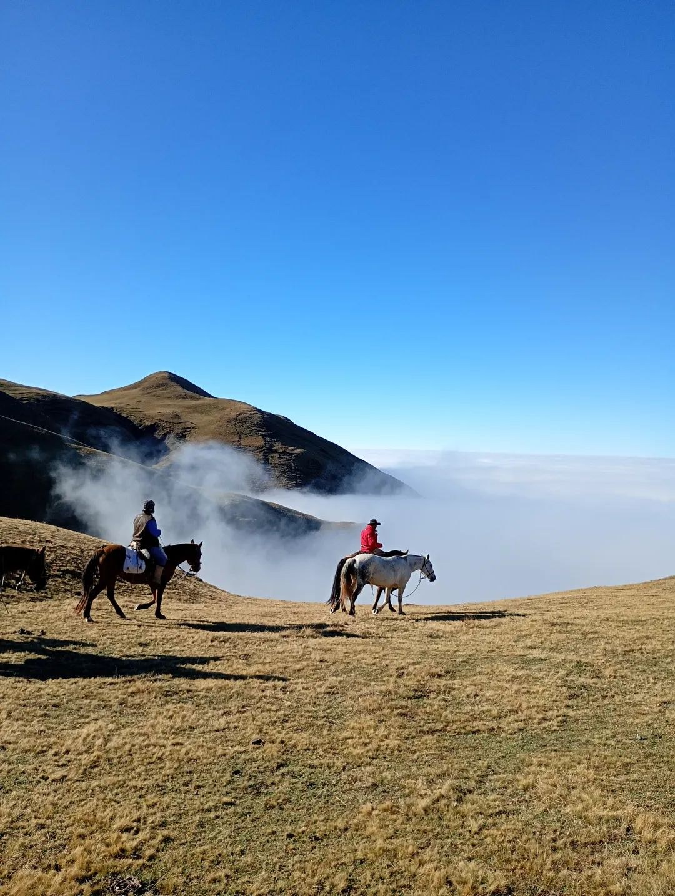
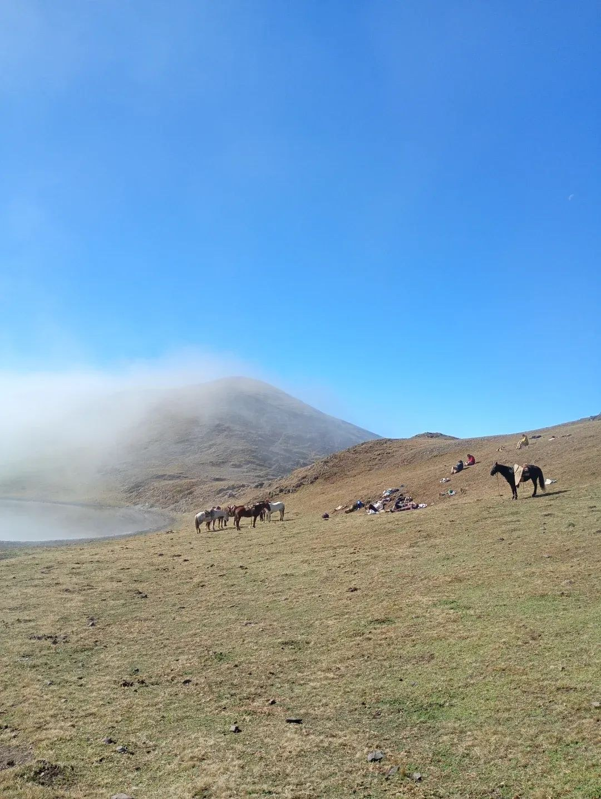

Les rencontres qui nous font grandir.
Équi-Zénith Ranch est né d'une passion pour les chevaux, la nature et les chemins singuliers du développement personnel.
Une passion des chevaux et de l'humain.
À l'origine d'Équi-Zénith Ranch, une cavalière passionnée par les chevaux, les voyages et les rencontres authentiques.
Son univers relie l'expérience équestre, l'accompagnement personnel, la liberté et une recherche de lien plus profond avec le vivant. Cette page accueillera bientôt son histoire, son parcours et sa philosophie, racontés avec ses propres mots.
Faire connaissance ↗

Les chevaux, au cœur de l'aventure.
Ils ne sont pas un décor : ils occupent une place centrale dans l'univers d'Équi-Zénith Ranch.
Cette page accueillera leur présentation individuelle, leurs personnalités et les photographies que vous souhaitez partager.
Section en cours de préparation, à compléter avec les portraits des chevaux.